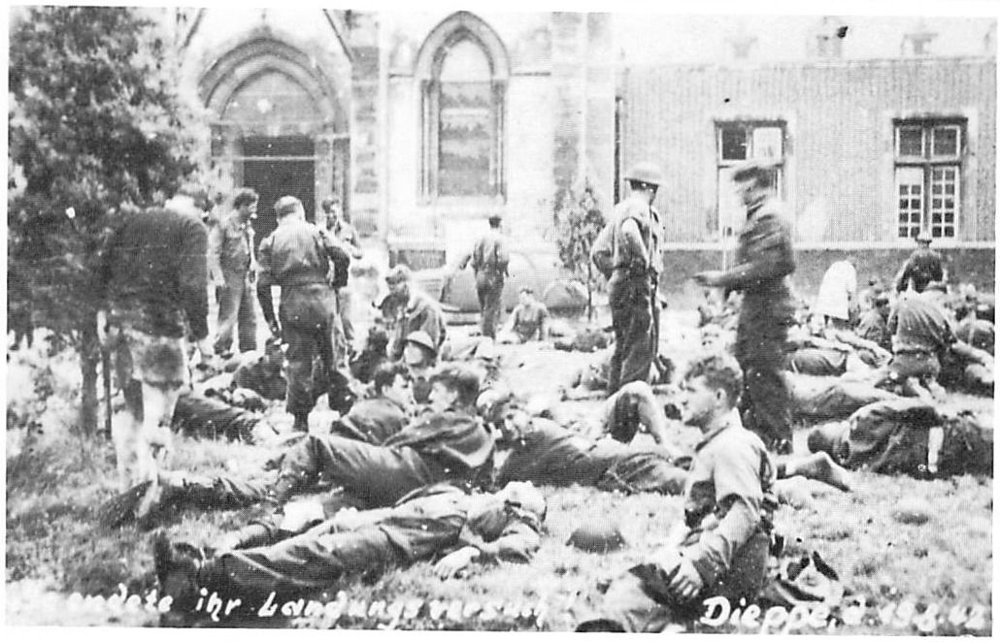
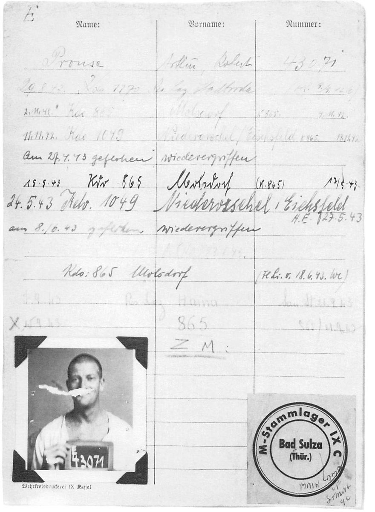
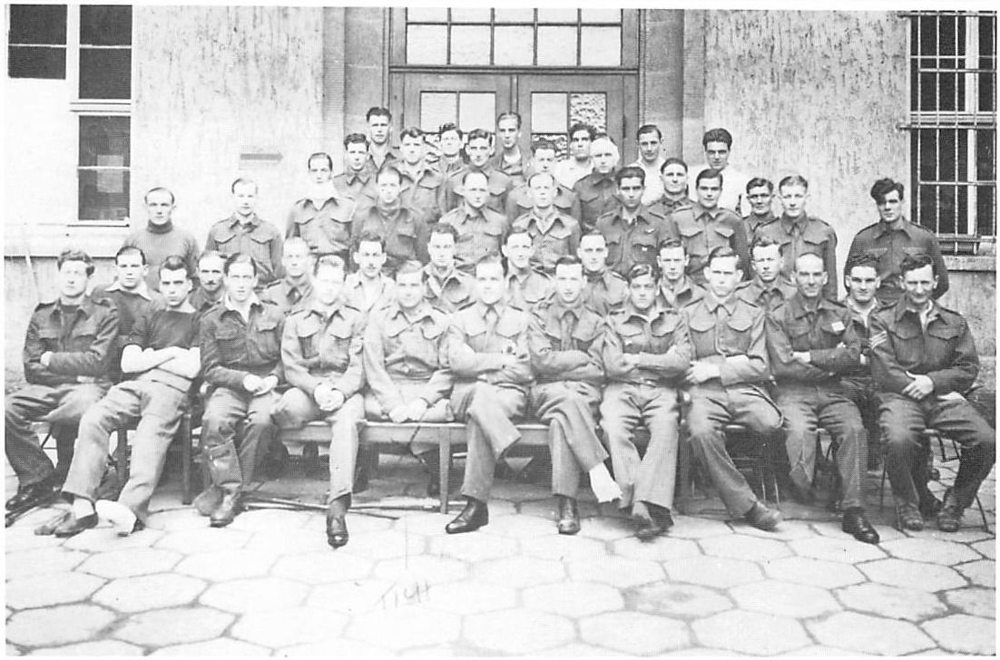

Chapter 2Limping Towards Germany
There were long lines of Germans standing with fixed bayonets waiting to welcome us to this seaside resort. They were yelling and motioning us to put our hands on the tops of our heads. As my eyes wandered down the lines, what struck me as odd was that there wasn’t one Jerry whose lips weren’t trembling. Maybe, like us, it was their first time to meet the enemy face to face. I don’t know why, but at that moment I felt that we were the victors and they the defeated.
I also felt deeply disappointed that in only a few hours of hell and frustration all of my boyhood dreams of reliving Ypres, Mons and other great battles had been wiped out in one fell swoop. I tried to think of what else could have been done to change this defeat into victory and came to a personal conclusion that the difference was the lack of fire power that should have been laid down ahead of us. This would have enabled the troops to advance instead of being pinned down on the beach. The navy and our fighter planes did their best but we had needed a pre-invasion bombardment and continuous air support. To this day I believe this could have turned the tide in our favour.
All these thoughts, feelings and impressions jostled in my mind as we were marched through the German lines in single file. Our helmets were collected and thrown in a pile, no doubt to be melted down and turned into shrapnel. Next, we had to empty our pockets and we watched as they greedily grabbed our watches and lighters, disregarding our money. One soldier screamed at me, motioning toward my empty holster. The shape of the .38 was still visible. I had to unbuckle and drop it before he prodded me on with his rifle butt.
We were marched through Dieppe, which in parts was reduced to rubble, and French civilians scrambled from air raid shelters to give us the ‘V’ for victory sign. It was a nice gesture and a hopeful sign for the future but they were soon chased away. We arrived in front of a hospital, where our captors separated the badly wounded from the walking wounded. I joined the latter and, as we stood in the hot sun, I suddenly blacked out—most likely a delayed reaction to the tensions, from our dawn landing to our mid-afternoon surrender. When I came to, I saw a nurse bending over me. She looked kind and considerate, so it didn’t make any difference that I couldn’t understand what she was saying.

When I got to my feet, the column of walking wounded had left and I had missed going with most of my friends. Some of the more seriously wounded were carried into the Dieppe hospital but, as there was still some air activity, most of us were loaded into box-cars and transported to a hospital in Rouen-sur-Seine, where all I can remember is being put to bed and sleeping solidly until the following morning.
On awakening, I tried to swing my legs over the side of the bed but all they did was to drop like two dead lumps of meat. I was scared to beat hell, as every time I attempted to get up, my legs would collapse. I rubbed them furiously, trying to get some life back into them. After about fifteen minutes and with the help of the soldier in the next bed, I finally felt some life in them. The colour slowly started to come back and, gradually, so did the feeling. They hurt like hell but it was a lovely sensation to know they were still usable.
After that experience, I was afraid to get back into bed. Instead, I wobbled around the ward looking for familiar faces. This was unsuccessful, so, not wanting to stop walking, I approached a German doctor, who surprised me by speaking almost flawless English but with a heavy German accent. I told him that I wanted to keep busy and keep my legs moving. He called an orderly, who first put me to work sweeping the ward then serving hot soup to those who couldn’t get out of bed. I imagined myself as an ugly Florence Nightingale but in reality all I wanted was to keep the life in my legs. The doctor had told me that there were several marks of entry from small pieces of shrapnel in both legs and one foot and that the best thing I could do was to keep them moving, since some nerves could have been severed.
I soon graduated from kitchen work to rolling paper bandages. My big chance finally came when I was summoned to the operating room with three others. If they had issued me with a white gown, who knows, I may have become an instant doctor but the duty turned out to be the holding down of soldiers while they were operated on. We were the anaesthetists, one for each arm and one for each leg. Either there were no anaesthetics or the Germans did not want to waste them on us.
Our first patient had a bullet in his upper leg. The limb was a mixture of angry red, purple and yellow, and as the knife slit him, he screamed bloody murder while pus and blood shot into the air. His screams changed to vile curses as he called the doctor a ‘son-of-a-bitch-of-a-Hun’. This was his most polite epithet. The curses gradually changed to tears and then to laughter as the pressure was relieved, the bullet having popped out with the rest of the gore.
At the end of the day, I was able to have a quiet chat with the doctor. He started by saying, ‘What do you think now of our wonderful German army? They stopped the invasion with only one division.’ My reply was a sarcastic chuckle as I reminded him that it wasn’t an invasion but only a raid in force by about 5,000 men. To back up my point, I handed him a leaflet that had been prepared for the French civilians. As well as I can recall, it read, in French, ‘This is only a "coup de main" (raid). Take shelter and do not take any action to jeopardize your safety.’ The doctor crumpled it up, claiming that it was only propaganda. His last words to me were, ‘Our army knew you were coming and were well prepared. Your security was very bad.’
We spent several days in the hospital at Rouen before we were moved to the railway depot and loaded on to a hospital train headed for Germany. I was still on my feet, so they placed me in charge of a coach holding thirty men. My job was to tend to their every need, their food, their water and at times changing their bandages. The first day was the worst. It seemed that all thirty wanted a drink of water every minute and all of the time. They really couldn’t be blamed, since the heat in the coach was suffocating, what with the hot sun beating down on the roof and us forbidden to open any windows. Then one soldier nearly bled to death when his wound opened and the paper bandage, sodden with blood, came apart. I applied pressure to his leg off and on for almost an hour until a German first-aid man arrived on his daily rounds. I was tired and irritable, and this was only the first day.
On the second day, I was approached by a British sailor who somehow had sneaked into our coach from the adjoining one. He claimed that he knew France well and wanted a partner to escape with him. It was tempting, and my mind raced ahead through the first of many fantasies about getting back to fight another day, but I refused for two reasons. First, as much as I hated being at the beck and call of all these men, I just couldn’t leave them unattended. Secondly, I wanted to reach our destination, where I believed the Germans would register us and notify our next of kin. The train stopped frequently on its way through France and Belgium. Apparently the Jerrys wanted to show how many prisoners they had taken. The routine was always the same. Civilians approached, trying to peer through the windows. They gave the ‘V’ for victory sign and were promptly chased away. At one of these stops, I ignored the warning about opening windows or trying to communicate with the population and, after a great deal of banging and lifting, I finally did open a window, shoved my head partly out and tried to converse in my high-school French. It didn’t work very well, as all I received in the way of answers were shrugged shoulders and the usual ‘V’ signs. Behind me, I heard the scream of a German soldier. (They never gave an order; they screamed it. I believe they thought it would terrify us.) I spun around just as the son of a bitch lunged at my gut with his bayonet. I have never moved so fast in my life. I jumped backwards and sucked in my stomach at the same time. The tip of his weapon pierced my tunic but didn’t even scratch the skin. We stood frozen, staring at each other in mutual hatred. My mind raced as I tried to figure out my next move, but luckily I didn’t have to make one. With an unmistakable gesture, the German ordered me to shut the window. Not being entirely stupid, I did so.
At another stop, a German military photographer boarded the train in order to take propaganda photographs. When he entered our coach, accompanied by a guard, he set up his tripod and trained the camera on me, since I was the only one in our coach who was on his feet. He focused the lens and, just as the flash went off, I thumbed my nose at the camera. Both he and the guard screamed at me and the latter made a run towards me. Instead of a rifle butt, which I expected, he gave me a hard shove, knocking me backwards, and called me a Dummkopf (blockhead). All I could do was curse silently and pick myself up as they left the coach. I felt sure that this was one photo that would never be published. It was an extremely small victory, but a very satisfying one.
After what seemed to be an eternity, but was actually four long days and four endless nights, we arrived at our destination, the town of Stadtroda. I was glad the journey was over and happy to be relieved of my charges, especially the biggest moaner I have ever met, a British Commando Sergeant with a bad leg wound. He demanded more attention than any of the other soldiers. (I believe it is true that some of the toughest and bravest men usually make the worst patients.)
Much to my surprise, British soldiers in uniform boarded the train. For a moment I thought that we were being rescued, but as it turned out they were members of the British Medical Corps, assigned to the hospital in Stadtroda to work under a British Major who was a skilled Harley Street surgeon. He in turn was under the German hospital Commandant. We were quickly and efficiently unloaded and transported to the hospital, which was part of Stalag IXC. What amazed me was how the British treated the German guards, with a superior disdain.
There was a large number of other prisoners in the hospital, mainly Serbians and Yugoslavs. They had suffered through a typhus epidemic and we were told that, when they had been brought in, they were like living skeletons, with the fear of starvation in their eyes. This was soon borne out, for when we received our first hot meal in days, which consisted of potatoes and nothing else, most of us ate only a few spoonfuls and put the food aside. The Serbians and Yugoslavs collected all the leftovers in huge pots, sat down in a corner and proceeded to eat the contents like animals. Eventually, we did manage to eat a little better, but only because of the soft diet parcels supplied to us from Britain through the Red Cross. Mostly it was what we called ‘pap’ food, consisting of powdered milk, dried egg powder, pudding mixtures, etc., which was sent only to hospitals.
Because of the fear of a new typhus outbreak, we were shaved from head to foot, and I mean that literally. No hair escaped the hospital barber and, when my turn came, I almost panicked, not from his shaving my head but from what followed. He held my penis gently between thumb and forefinger and with quick and expert movements of his straight razor quickly denuded me of all pubic hair. I held my breath during the whole operation, expecting any minute for him to cut off my pride and joy and leave me with a high giggle. When he finished there was a loud sigh of relief, not only from me, but from the other prisoners who had jumped out of bed to watch, knowing their turn was coming.
We were fingerprinted and photographed the next day, after supplying our name, rank and serial number. Then we were issued POW dog tags. I became No 43071 and as such, after dark, I stole out of the ward and made my way to the room where I had learned the records were kept. I was an avid collector and just had to see and possess my official prison photo. It was fairly easy to steal but hard as hell to keep, what with the constant searches.

The nights were long in the hospital. It was difficult to sleep while trying to shut out the groans and moans of the wounded. The next bed to mine was occupied by who else but the chief moaner from the train journey. We never spoke; we only glared at each other with mutual dislike. On my other side was a very badly wounded private, and although he must have been in great pain, he never uttered a whimper. He died within the week as gangrene had set in and could not be curbed, even after amputating his leg.
The worst culprit was another seriously wounded private who slept all day long and commenced his ritual of moaning as soon as lights were out. It was the same cry every night, starting with a prolonged ‘Jeeee-sus—Keeeeee-rist’, repeated over and over, in long drawn-out syllables. This always started a chorus of shouts from the other patients, ranging from, ‘Shut up you bastard’ to ‘Die you son-of-a-bitch and get it over with.’ We finally solved the problem by taking turns waking him during the daytime. As soon as his eyes began to flutter shut, someone would shake him awake.
One of the heroic figures to us was a British soldier, who had been in and out of the hospital for two years. He had been captured at Dunkirk and had since lost both legs. His back had also received bad wounds and was criss-crossed with scars from numerous operations. This brave man never stopped smiling and moving about the ward encouraging the wounded. He travelled along the rails of the beds, which were placed back to back, and could move faster than we could walk. He was only half a man physically, with extremely short stumps, but to us he was seven feet tall.

As a boy I had read in wonder about the soldier whose life was saved by the Bible he carried in his tunic pocket. At the time, I felt that it was an almost impossible miracle. Now I know better, because one of my buddies in the hospital had had a bullet enter his body and stop just short of going through his heart. The main impact was stopped by a wallet full of girls’ photos. Another soldier caught a spent bullet square in the middle of his forehead. The hole was puckered and dark and closed, set in about a quarter of an inch inside his skull. He never even had a headache, and the last time I saw him the bullet still hadn’t been removed. The airman in the bed next to mine had bailed out of his falling plane. His chute had failed to open and he lived to tell the tale only because he landed in a haystack. This was attested to by the Germans.
One of my best buddies, from the same company as mine, was also in the ward. He had had a bullet removed from his knee and was up and walking to get the leg working properly. We started talking escape and finally agreed to go together as soon as his knee healed. By the time he was ready, my instep had festered and I was scheduled for the operating room. My buddy was itching to go and asked me if I minded if he went alone. My answer was ‘No’ and that night he took off, leaving his bed stuffed with blankets and clothing to make it appear that he was safely tucked in. (I met him months later and learned that he had boarded a box-car and had ended up near the Czech border—incidentally the wrong direction—and finally had been recaptured.)
The next morning I was picked up early and moved to the operating room. They were well equipped here and gave me a spinal anaesthetic. I sat up and stated that nothing could put me to sleep, and was gently pushed back by the British major who had performed the operation. He said, ‘Take it easy, it’s all over.’ He had removed one large piece of shrapnel from my calf, leaving the smaller pieces alone, stating that they would eventually work their way to the surface. He tried to get the piece in the instep but it eluded him, being too deep in among the many small foot bones.
When I came out of the anaesthetic, my bed was surrounded by patients who could walk. This gathering of an audience around a drugged man’s bed was a daily ritual, as every person reacted differently to the anaesthetic: some sang and acted crazy, some sobbed, others fought. This show was one of our few recreations and broke much of the tension. I was peaceful for a while. Then I turned my head and spotted the ‘moaner’ in the next bed. He had been operated on too, and was also swathed in bandages. With mutual consent we hurled ourselves at each other in hand-to-hand combat. Cheers arose as the beds collapsed and we rolled amongst the sheets and pillows, locked in a deadly embrace and trying desperately to eliminate each other. Guards rushed in and finally pulled us apart, an action roundly booed by the spectators. (Many months later, in the POW camp, we met, both healed and on our feet. It was instant respect for each other and we managed to hit it off very well.)
The remaining days in hospital were passed shooting the breeze, exchanging stories of our experiences on the beach at Dieppe and lining up for our turn in the latrine. There was no question of where it was, as the approach was covered with excreta. The single latrine on our floor, insufficient in size for the large number of patients, was a filthy mess, with the floor, walls and seat completely soiled. The line-up was always so long and the prisoners so ill that most simply couldn’t wait. It was a gruesome experience for the fastidious.
We played cards to pass the time and to forget our hunger. We looked forward to mealtimes but they were always disappointing, with potatoes and cabbage being the main fare. We often gave our food away to Russian or Ukrainian patients, since we hadn’t previously done without and didn’t know the meaning of starvation.
We mainly tried to sleep as much as possible. Sleep was a good healer both for the wounds of our bodies and of our minds, which had been given too great a shock in too short a time. Every so often a visiting German doctor would make his rounds with the resident British POW doctor either to declare men fit to be discharged or to be given more time. The British doctor would always try to buy more time for the men.
We visited other beds on a continuous search for cigarettes, as the only ones available at the time were the French fags, which were strong enough to make you cough and wheeze. Occasionally, Serbian prisoners offered us papers and small sacks of very coarse tobacco kernels, which either pierced the cigarette papers or ended up on the floor.
My period of recuperation lasted until November, when I was discharged from the hospital and shipped to another part of Stalag IXC, on the outskirts of Molsdorf.